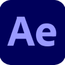
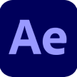

Hola!
Cómo diseñadora multimedial con sede en Buenos Aires, combino
mi amor por el diseño y las capacidades que adquirí a lo largo de mi
carrera, habilidades como la organización, resolución de problemas,
capacidad de trabajo en equipo y capacidad de resolución ante estrés.
Mi amor por el arte en general hizo que quisiera combinarlo con la
tecnología y explorar otra rama desconocida como lo era el diseño.
Cuándo no estoy diseñando me pueden encontrar jugando para liberar
estrés, pasando el tiempo con personas valiosas para mí, bailando o
explorando cosas interesantes relacionadas al diseño ya que considero
que todos los días podemos aprender cosas nuevas y tener ese interés
constantemente es la clave para crecer en todo ámbito.
 
